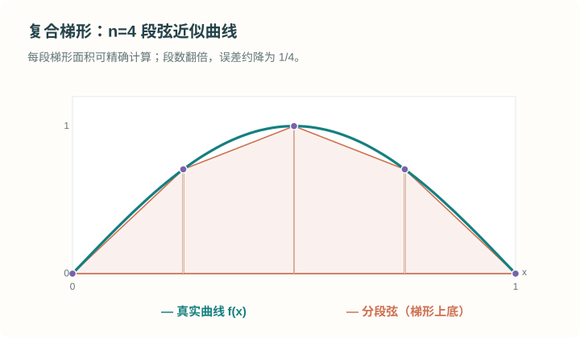
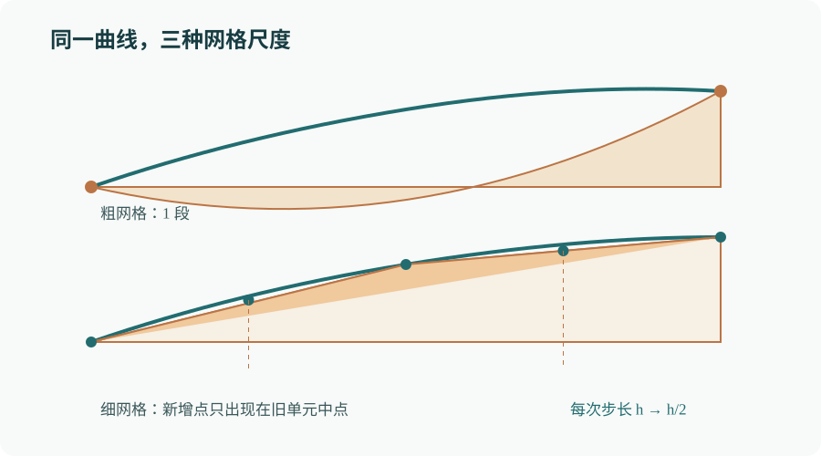
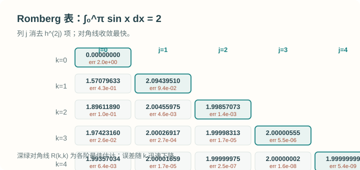

CHAPTER 11 · NUMERICAL ANALYSIS
复合求积与 Romberg 外推：把误差阶当作可用信号
单段梯形或 Simpson 在宽区间上误差很大。把区间切细能降误差，但更有用的做法是：先承认误差关于步长有确定的结构，再反过来利用这个结构，把两次粗算的结果外推成更精确的估计。
01 · 单段公式为什么在宽区间失效
上一章的单段梯形与 Simpson 误差里都带着区间长度 b−a 的高次幂。以梯形为例，若 f 在 [a,b] 上二阶连续可导，则存在 ξ∈(a,b) 使
误差随区间长度的三次方增长。区间越宽，单段公式越不可信。取一个能心算的例子：∫₀^π sin x dx = 2。单段梯形只用到 sin0 = sinπ = 0 两个端点值，结果是 (π/2)·(0+0) = 0，相对误差 100%。公式本身没错，错在用一次弦去替代整个拱形。
这说明“误差大”不是随机噪声，而是结构化的截断余项。它由步长和 f 的导数决定，因此原则上可被预测、也可被消去。本章先把这个结构讲清楚，再把它当信号用起来。

n 段后，每段用端点连线（弦）近似曲线；每段梯形面积可精确计算，段数翻倍时误差约降为原来的 1/4。02 · 复合求积：把区间切开再相加
把 [a,b] 均匀分成 n 个子区间，步长 h=(b−a)/n，节点 xᵢ=a+ih。在每个子区间上套用单段公式再相加，就得到复合求积。复合梯形把内部节点权重设为 1、两端设为 1/2：
复合 Simpson 则要求 n 为偶数（每两个子区间构成一组三点），权重按 1、4、2、4、…、4、1 交替：
误差阶是这两个公式真正的分水岭。当 f 足够光滑时，复合梯形为 O(h²)=O(n⁻²)，步长减半误差降为 1/4；复合 Simpson 为 O(h⁴)=O(n⁻⁴)，步长减半误差降为 1/16。这里说的是截断误差，它与浮点舍入误差无关；当 h 小到一定程度，舍入误差会重新占主导，不会无限变小。

03 · 误差只含偶次幂：Euler–Maclaurin 结构
复合梯形的误差并不是任意形式的 c₁h+c₂h²+…。当 f 足够光滑且端点导数有界时，误差按 Euler–Maclaurin 展开组织，只含步长的偶次幂，没有奇次项。
这个结构的来源是：梯形误差可以写成端点处 f 各阶导数与伯努利多项式的乘积，而奇次项的贡献在区间上相互抵消。它带来两个直接后果：一是误差关于 h 是“平滑”的，可以用不同步长的结果反推；二是相邻两次步长对半，误差至少能线性组合掉一项。前一个后果让误差可估计，后一个后果让误差可消除。
“只有偶次幂”依赖 f 光滑。若 f 有奇点、不连续导数或区间端点奇异，这个展开不再成立，后面的外推也会失效——这是本章的关键限制，第 06 节会用具体反例验证。
04 · Richardson 外推与 Romberg 表
既然误差只含偶次幂，就可以用两个不同步长的结果消去首项。由 (11.4)，T(h)=I+c₁h²+…，T(h/2)=I+c₁h²/4+…。取线性组合使 h² 项系数为零：
写成复合序列的形式就是 T₂ₙ+(T₂ₙ−Tₙ)/3。有趣的是，这个外推结果恰好就是复合 Simpson 值：Simpson 公式可以理解为对梯形做一次 Richardson 外推，而不是一个与梯形无关的新公式。
外推可以继续。若把已经消去 h² 的结果再用两个步长组合，就能消去 h⁴，依次递推得到 Romberg 表：第 0 列是复合梯形序列 R(k,0)=T_{2^k}，第 j 列用相邻两行做一次外推：
每增加一行只需求 2^{k−1} 个新节点，却能让对角线精度上升约两个阶；代价是要求函数光滑且需要存储整个三角表。图 3 给出 ∫₀^π sin x dx 的形表：第一列从 0、1.57、2.09 一路摆动，对角线则迅速稳定到 2。

10⁰ 级降到 10⁻⁸ 级（教学示意，数值由 math.sin 双精度计算）。
c h²，步长减半的细网格主项缩小为 1/4；组合 (4T₂ₙ−Tₙ)/3 即可消去该主导项，只留下更高阶误差项。05 · 实验：sin 收敛，√x 不收敛
下面用一个可复现的断言把“误差阶可用”与“误差阶失效”放在一起对比。对光滑的 sin x，Romberg 对角线迅速逼近确切值 2；对端点导数无界的 √x，Euler–Maclaurin 结构不成立，对角线虽仍在改善，但收敛速度明显降低。
import math
def romberg(f, a, b, K):
R = [[(b - a) * (f(a) + f(b)) / 2]] # R[k][0] = 复合梯形 T_{2^k}
for k in range(1, K + 1):
n = 2 ** k
h = (b - a) / n
s = sum(f(a + i * h) for i in range(1, n, 2)) # 只加新增奇节点
R.append([R[k - 1][0] / 2 + h * s])
for j in range(1, k + 1):
p = 4 ** j
R[k].append((p * R[k][j - 1] - R[k - 1][j - 1]) / (p - 1))
return R
Rs = romberg(math.sin, 0, math.pi, 5)
assert abs(Rs[5][5] - 2.0) < 1e-9 # 光滑：外推到达机器精度级
assert abs(Rs[5][0] - 2.0) > 1e-3 # 同行的梯形值仍差很多
Rq = romberg(math.sqrt, 0, 1, 5)
assert abs(Rq[5][5] - 2/3) > 1e-4 # 端点奇异：外推不能恢复高阶
assert abs(Rq[5][5] - 2/3) < abs(Rq[4][4] - 2/3) # 仍在改善，但慢
print(round(Rs[5][5], 12), round(Rq[5][5], 6))断言不是装饰：它们把“外推在光滑情形能消去偶数次项”和“端点奇异时该前提被破坏”固定成可检验的区别。测试只在指定函数族上成立，不等同于对所有实函数的误差保证。
06 · 失败边界与自适应策略
前提失效时外推会变差。若 f 有奇点、导数不连续或区间端点奇异，(11.4) 的偶次幂展开不成立，Romberg 对角线可能停滞甚至振荡。补救办法是先做变量替换消除奇异（例如 √x 取 x=t²），或改用能处理端点奇异的求积公式。
均匀加密并不高效。当误差集中在少数区域时，全局加倍会在一大片平缓区域浪费采样。实际库采用自适应求积：在每个子区间上用两种精度分别算，差异超过局部容差就对半细分，否则保留。scipy.integrate.quad 使用此类策略。
舍入误差构成下限。复合梯形误差是截断与舍入之和；h 越小截断越小，但求和次数变多、舍入积累上升。当两者相当时继续缩小 h 不会更准，这不是外推能修复的。
特例：周期函数。对于在完整周期上光滑的周期函数，Euler–Maclaurin 展开中各项因端点导数相等而相互抵消，简单的复合梯形反而以远超幂次的速度收敛。结论与具体函数有关，不能套用到非周期或不光滑情形。
原始资料与延伸阅读
本章将文献中的数学结论与本文独立构造的数值示例严格区分；图示与实验为教学演示。
- NIST DLMF §3.5 · Quadrature：复合求积、梯形与 Simpson 误差、Euler–Maclaurin 结构。
- SciPy · scipy.integrate.quad：自适应求积的接口与容差语义（与固定步长的梯形/Simpson 相区分）。
- SciPy · scipy.integrate.romb：现存基于采样值的 Romberg 积分实现。原函数型
scipy.integrate.romberg已从当前 SciPy 中移除；Romberg 外推“函数需光滑”的适用前提不变。